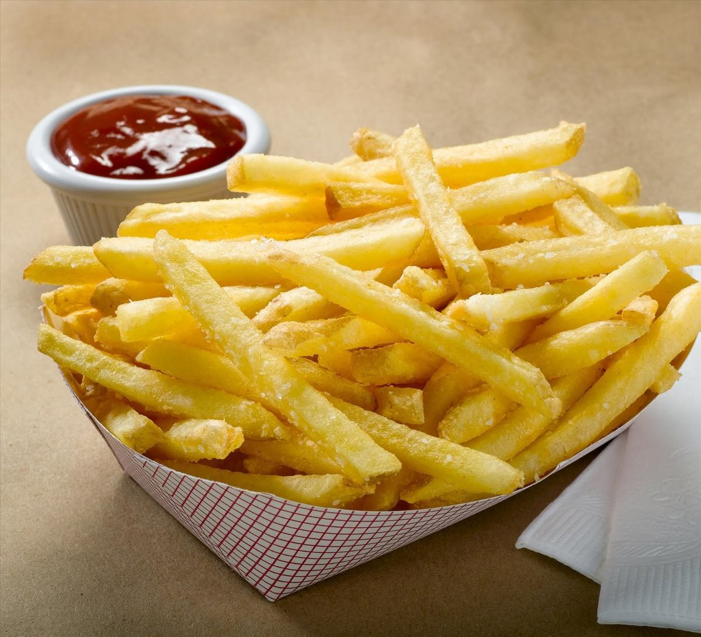

Papas Fritas Caseras
Receta de papas fritas caseras para todo el publico

Ingredientes
- 3 o 4 papas (300 gr)
- Aceite
- Sal
Procedimiento
- Pelar las papas
- Cortarlas en baston
- Calentar aceite en una sarten
- Cocinar hasta que queden doradas
- Removerlas del aceite y salar a gusto